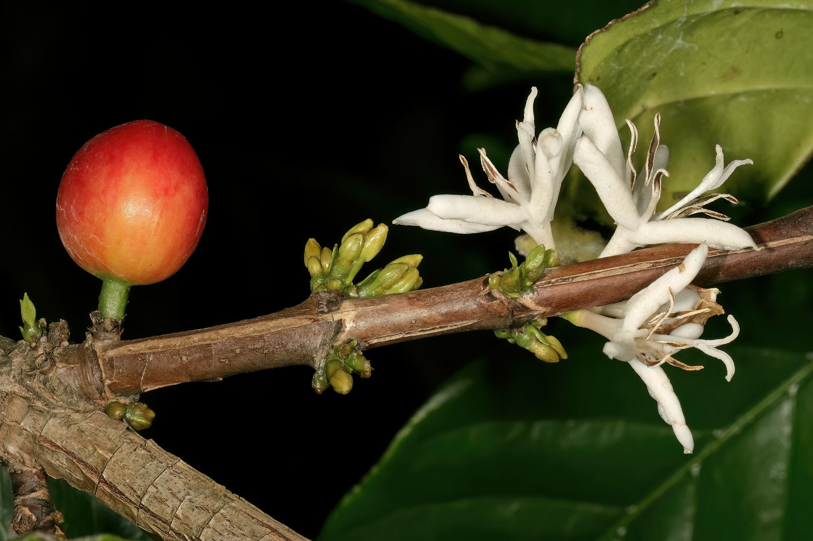

Kalt
Cascara Soda
Sirup · Mineralwasser · Eis · Zitronenzeste
Spritzig und fruchtig. Der einfachste Weg, Cascara zu probieren.
Cascara Tonic
Sirup · Tonic Water · Eis · Orangenzeste
Bitter trifft fruchtig, wie beim Espresso Tonic.

Cascara · Fribourg
Sirup aus der Schale der Kaffeekirsche. Ein Schülerunternehmen am Collège Saint-Michel in Fribourg.
Eine Kaffeekirsche, Schicht für Schicht.
Die BohneSie geht zur Rösterei.
Die SchaleSie bleibt. Getrocknet heisst sie Cascara.
Der SirupDaraus kochen wir unseren Sirup.
Cascarup
Zwei Sorten, in 200 und 500 ml. Bestell online, hol deine Flaschen am Stand ab.
Cáscara – spanisch für Schale
Für Kaffee zählt nur der Samen. Haut und Fruchtfleisch werden entfernt, und das ist viel: Rund 30 Prozent der Trockenmasse einer Kaffeekirsche entfallen auf sie. Bei der trockenen Aufbereitung bleibt pro Kilogramm Kaffeebohnen etwa ein Kilogramm Schalen übrig.
Ein Teil davon wird zu Dünger oder Tierfutter. Ein grosser Teil landet bis heute in der Umwelt und belastet Böden und Gewässer. Getrocknet aber trägt die Schale einen eigenen Namen: Cascara. Im Jemen, in Äthiopien und in Bolivien wird sie seit Langem aufgegossen und getrunken.

Getrocknet
Im Jemen heisst der Aufguss aus Kaffeeschalen Qishr. Er wird mit Gewürzen verfeinert und ist seit dem 16. Jahrhundert belegt. In Bolivien trinkt man Sultana, in Äthiopien Hashara. In einer Verkostungsstudie beschrieben die Prüfpersonen Cascara-Aufgüsse als süsslich, fruchtig und kräuterig, mit Noten von Honig, Dörrpflaume und Schwarztee.
Unser Vorhaben

Unser Sirup soll den Geschmack von Cascara ins Glas bringen: mit Wasser verdünnt, im Kaffee oder in Drinks. Wir arbeiten an mehreren Sorten; welche es werden, zeigen wir zur Lancierung.
Nach der Blüte brauchen Arabica-Kirschen rund sieben bis neun Monate, bis sie reif und rot sind. Dann werden sie geerntet.
Auf der Plantage
Die Bohnen werden aus der Frucht gelöst. Haut und Fruchtfleisch werden getrocknet: Das ist Cascara.
Bei der Aufbereitung
Wir giessen die Cascara mit heissem Wasser auf und kochen den Aufguss zu Sirup ein.
In Fribourg
Wir füllen in kleinen Chargen ab. Jede Charge bekommt eine Nummer, damit sich jede Flasche zurückverfolgen lässt.
In Fribourg
Ideen fürs Glas
Sechs Ideen, wie wir uns den Sirup im Glas vorstellen. Alle alkoholfrei; die Mengen verraten wir mit dem fertigen Sirup.
Das Projekt
Wir sind ein Schülerunternehmen am Collège Saint-Michel. Im Company Programme von Young Enterprise Switzerland gründen und führen Schülerinnen und Schüler zwischen 16 und 20 Jahren während eines Schuljahres ein eigenes Miniunternehmen.
Unser Beitrag ist ein Produkt aus dem, was bei der Kaffee-Ernte übrig bleibt.
Unterwegs
Vier Daten, vier Orte. An diesen Tagen sind wir mit unserem Stand vor Ort: Komm vorbei und lern uns kennen.
Donnerstag · 19:00
Aula, Collège de Gambach
Fribourg

Samstag
Altstadt
Estavayer-le-Lac

Samstag
Collège Saint-Michel
Fribourg

Samstag
Altstadt
Avenches

Karten: © OpenStreetMap-Mitwirkende
Shop
Zwei Sorten, zwei Grössen. Bestell hier und hol deine Flaschen an einem unserer Stände oder am Collège Saint-Michel ab. Bezahlt wird bei der Abholung, bar oder mit TWINT.
Der Klassiker aus der Schale der Kaffeekirsche: fruchtig, mit Noten von Honig und Dörrpflaume.
CHF 6.95
Unsere zweite Sorte.
CHF 7.95
Alle Preise in Schweizer Franken. Mit der Bestellung akzeptierst du unsere Bestellbedingungen.